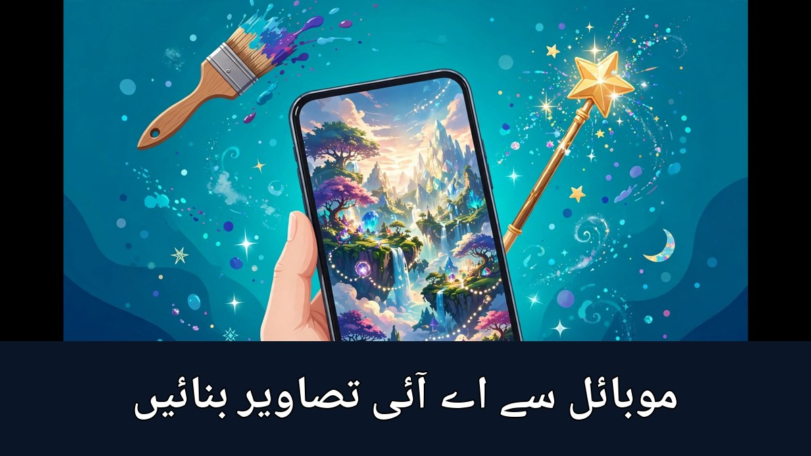

موبائل سے AI تصاویر کیسے بنائیں؟ مکمل اردو گائیڈ

کبھی آپ نے سوشل میڈیا پر ایسی خوبصورت تصویر دیکھی ہو جو حقیقت میں کبھی کھینچی ہی نہیں گئی — ایک خواب جیسا محل، یا بارش میں بھیگتا پرانا لاہور؟ آج کل ایسی تصاویر مصنوعی ذہانت یعنی AI سے بنتی ہیں، اور حیران کن بات یہ ہے کہ اس کے لیے نہ مہنگا کمپیوٹر چاہیے، نہ ڈیزائننگ سیکھنی پڑتی ہے۔ صرف آپ کا موبائل اور ایک جملہ — جسے پرامپٹ کہتے ہیں — کافی ہے۔ اس مضمون میں موبائل سے AI تصاویر بنانے کے مفت ٹولز، اچھا پرامپٹ لکھنے کا فن، اردو متن کا حل اور ضروری احتیاطیں آسان اردو میں بیان کی گئی ہیں۔
1۔ AI تصویر بنتی کیسے ہے؟
AI تصویر بنانے والا ٹول کروڑوں تصاویر اور ان کی تفصیل سے سیکھا ہوا ہوتا ہے۔ جب آپ لکھتے ہیں کہ "غروبِ آفتاب کے وقت پہاڑوں پر ایک لکڑی کا گھر"، تو یہ ٹول ان الفاظ کا مطلب سمجھ کر نئی تصویر بنا دیتا ہے — یہ کسی پرانی تصویر کی نقل نہیں ہوتی، بلکہ ہر بار ایک نئی تصویر تخلیق ہوتی ہے۔ اسی لیے ایک ہی جملے پر دو بار تصویر بنائیں تو دونوں میں تھوڑا فرق ضرور ہوتا ہے، اور جملہ جتنا واضح ہوگا، تصویر اتنی ہی اچھی بنے گی۔
2۔ مفت ٹولز کون سے ہیں؟
موبائل پر AI تصاویر بنانے کے کئی معروف ٹولز مفت دستیاب ہیں۔ ہر ٹول کی مفت حد وقت کے ساتھ بدلتی رہتی ہے، اس لیے کسی ایک پر انحصار کرنے کے بجائے دو تین ٹولز آزما کر دیکھیں کہ آپ کو کس کا انداز پسند آتا ہے:
- بنگ امیج کری ایٹر (Bing Image Creator): مائیکروسافٹ کا مفت ٹول ہے، موبائل براؤزر سے چلتا ہے، روزانہ محدود تعداد میں تصاویر مفت بنتی ہیں، اور شروع کرنے والوں کے لیے سب سے آسان ہے
- چیٹ جی پی ٹی (ChatGPT): چیٹ کے انداز میں تصویر بنانے کی سہولت دیتا ہے — آپ اردو میں بھی بتا سکتے ہیں کہ کیسی تصویر چاہیے، اور پھر اس میں تبدیلیاں بھی اسی چیٹ میں مانگ سکتے ہیں
- جیمنائی (Gemini): گوگل کا AI ٹول ہے جو موبائل ایپ اور براؤزر دونوں میں تصویر بنانے کی سہولت دیتا ہے
- واٹس ایپ اور فیس بک کے AI فیچر: میٹا AI کے ذریعے چیٹ میں ہی تصویر بن سکتی ہے، لیکن اس کا معیار اور سائز دوسرے ٹولز سے کم ہوتا ہے
شروع میں کسی ایک مفت ٹول سے کام چلائیں، اور پریمیم پلان لینے سے پہلے مفت ورژن سے اندازہ لگا لیں کہ آپ کو کتنا استعمال ہے۔
3۔ قدم بہ قدم طریقہ — پہلی تصویر بنائیں
طریقہ تقریباً ہر ٹول میں ایک جیسا ہے:
- موبائل براؤزر میں ٹول کی ویب سائٹ کھولیں اور اپنے اکاؤنٹ سے سائن ان کریں — عام طور پر گوگل یا مائیکروسافٹ اکاؤنٹ کافی ہوتا ہے
- تصویر بنانے والے حصے میں جائیں — عموماً "Create" یا "Generate" کا بٹن ہوتا ہے
- اپنا پرامپٹ لکھیں، یعنی واضح الفاظ میں بتائیں کہ تصویر میں کیا ہو — موضوع، جگہ، روشنی اور انداز
- سائز منتخب کریں — سوشل میڈیا پوسٹ کے لیے مربع، یوٹیوب تھمب نیل کے لیے چوڑا، اور موبائل وال پیپر کے لیے لمبا سائز بہتر رہتا ہے
- بنائیں کا بٹن دبائیں اور چند سیکنڈ انتظار کریں — ٹول عام طور پر ایک ساتھ چار تصاویر بناتا ہے، ان میں سے بہترین منتخب کریں
- پسند آنے والی تصویر ڈاؤن لوڈ کر لیں — مفت ٹولز کی تصویر پر بعض اوقات چھوٹا واٹر مارک ہوتا ہے، جسے استعمال سے پہلے چیک کر لیں
پہلی تصویر اگر اچھی نہ بنے تو مایوس نہ ہوں — پرامپٹ میں ایک دو الفاظ بدل کر دوبارہ بنائیں۔ یہی AI تصویر بنانے کا اصل طریقہ ہے: لکھیں، دیکھیں، بہتر کریں، پھر بنائیں۔
4۔ اچھا پرامپٹ لکھنے کا فن
اچھا پرامپٹ وہ ہے جس میں تصویر کی چار چیزیں واضح ہوں: کیا ہے، کہاں ہے، کیسی روشنی ہے، اور کس انداز میں ہے۔ مثال کے طور پر صرف "ایک گاؤں" لکھنے کے بجائے یہ لکھیں: "شام کے وقت پنجاب کا ایک چھوٹا گاؤں، کھیتوں میں سنہری روشنی، مٹی کے گھر، بچے پتنگ اڑاتے ہوئے، حقیقی تصویر جیسا انداز"۔ انگریزی میں پرامپٹ لکھنا عموماً بہتر نتیجہ دیتا ہے، کیونکہ یہ ٹولز انگریزی پر زیادہ تربیت یافتہ ہیں — آپ اردو میں سوچیں اور سادہ انگریزی میں لکھیں۔
پرامپٹ لکھتے وقت ان باتوں کا خیال رکھیں:
- تفصیل دیں، مگر حد سے زیادہ نہیں: پانچ چھ واضح باتیں کافی ہیں، پورا مضمون لکھنے سے ٹول الجھ جاتا ہے
- انداز بتائیں: حقیقی تصویر، کارٹون، پینٹنگ یا تھری ڈی — انداز لکھنے سے نتیجہ بالکل بدل جاتا ہے
- روشنی اور موسم لکھیں: صبح کی نرم روشنی، بارش، برف — یہ الفاظ تصویر میں جان ڈال دیتے ہیں
- منفی باتیں بھی لکھ سکتے ہیں: بعض ٹولز میں یہ بتایا جا سکتا ہے کہ تصویر میں کیا نہیں ہونا چاہیے، جیسے دھندلا پن یا اضافی انگلیاں
5۔ اردو متن والی تصویر کا مسئلہ اور اس کا حل
AI ٹولز سے اردو لکھوانا ابھی مشکل ہے — اکثر اردو الفاظ ٹوٹے ہوئے یا غلط لکھے جاتے ہیں۔ بہترین حل یہ ہے کہ تصویر AI سے بنوائیں، اور اس پر اردو تحریر بعد میں الگ ایپ سے لکھیں۔ کینوا (Canva) جیسی مفت ایپ میں تصویر پر اردو عنوان آسانی سے لکھا جا سکتا ہے، اور وہیں سے یوٹیوب تھمب نیل یا فیس بک پوسٹ کا سائز بھی سیٹ ہو جاتا ہے۔ انگریزی کا ایک دو لفظوں کا عنوان AI تصویر میں عموماً ٹھیک بن جاتا ہے، مگر لمبی تحریر AI سے نہ لکھوائیں۔
6۔ AI تصاویر کہاں استعمال کر سکتے ہیں؟
- یوٹیوب تھمب نیل: ویڈیو کے موضوع کی دلچسپ تصویر بنائیں، پھر اس پر کینوا سے بڑا اردو عنوان لکھیں
- کاروبار اور دکان: اپنی مصنوعات، پوسٹر یا فیس بک پیج کے لیے خوبصورت تصویر بنائیں — فوٹوگرافر کا خرچ بچ جاتا ہے
- سوشل میڈیا پوسٹس: اسلامی اقوال، کہانیوں یا بچوں کی نظموں کے لیے متعلقہ تصویر بنانا بہت آسان ہو جاتا ہے
- پڑھائی اور بچوں کی کہانیاں: بچوں کو کہانی سنانے کے لیے کرداروں کی تصاویر بنا کر کہانی زیادہ دلچسپ بنائی جا سکتی ہے
- فری لانسنگ: جب ہنر آ جائے تو دوسروں کے لیے تھمب نیل اور پوسٹ ڈیزائن بنا کر کمائی بھی کی جا سکتی ہے
7۔ احتیاطیں — یہ غلطیاں کبھی نہ کریں
- کسی حقیقی شخص کی جعلی تصویر بنا کر اسے سچ بنا کر پیش نہ کریں — یہ جھوٹی خبر پھیلانے کے مترادف ہے اور قانونی مسئلہ بھی بن سکتا ہے
- کسی اور کی تصویر، چہرہ یا برانڈ کا لوگو اپنی تصویر میں استعمال نہ کریں
- جہاں پلیٹ فارم پوچھے کہ تصویر AI سے بنی ہے، وہاں سچ بتائیں — یوٹیوب اور فیس بک پر AI لیبل لگانا اب ضروری ہوتا جا رہا ہے
- اپنی یا بچوں کی اصل تصاویر AI ٹولز میں اپلوڈ کرنے سے پہلے سوچیں — وہ تصویر ٹول کے سرور پر جا سکتی ہے
- کسی ٹول سے "مفت لامحدود تصاویر" کے دعوے پر اپنا پاس ورڈ یا بینک کی تفصیل کبھی نہ دیں — اصلی مفت ٹولز بینک کارڈ نہیں مانگتے
AI سے تصویر بنانا کوئی جادو نہیں — یہ ایک ہنر ہے جو مشق سے آتا ہے۔ واضح جملہ لکھیں، نتیجہ دیکھیں، بہتر کریں، اور پھر دوبارہ بنائیں۔